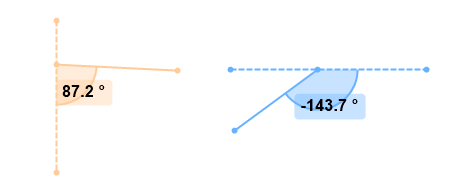

List of tools¶
Text & number tools¶
Label
Numbers
Text and number tools can be used to create small labels or consecutive numbers. The label tool has an optional arrow.
Pencil tool¶
Pencil tool
The pencil tool is used to create free-hand drawings. The width of the stroke can be modified afterwards but the path is fixed.
Posture tools¶
Human model
Human model (2)
Bike fit
Archery
Profile
Genu
Posture
Central sacral vertical line
Canis
Equus
Posture tools are used to study or annotate the general posture of the athlete or subject.


Line tools¶
Line
Curve
Polyline
Rectangle
 Circle
CircleDistance horizontal
The line tool and the circle tool can also be used to measure segments and circles, see Measurement > Measuring positions and distances.
Arrow tools¶
Arrow
 Arrow - Dash
Arrow - DashArrow - Squiggly
Arrow - Curve
Arrow - Polyline
Arrow - Polyline dash
Arrow - Polyline squiggly
The arrow tools can be used to point at things or illustrate players or ball trajectories.
Marker tool¶
Marker tool
The marker tool is used to highlight the location of a single object or joint.
See also: Measuring positions and distances.
Angle tools¶
Angle tool
 Goniometer
GoniometerAngle to horizontal
Angle to vertical
Angle tools are used to measure angles on a particular plane.
See also: Measuring angles.
Stopwatch tools¶
 Stopwatch
StopwatchClock
Stopwatch tools are used to measure time positions and intervals.
See also: Measuring time.
Grid tools¶
Perspective grid
Grid
Distortion grid
The grid tools are used to materialize a plane of motion or for calibration purposes.
Spotlight tool¶
Spotlight tool
The spotlight tool is used to highlight a particular area of the image by dimming the rest. Multiple spotlights can be added throughout the video.
Magnifier¶
Magnifier
The magnifier function creates a picture-in-picture effect with an enlarged version of the current image displayed within the original image. This is a display mode rather than a normal drawing tool, it is not saved in the KVA file.